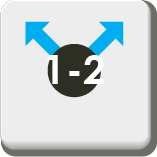
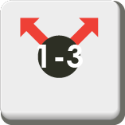

- 
- 


Rapport de développement de projet final - ISN 2019
Crédits
Développeur : NGUYEN Anthony
Designer : u/elheber
Préambule
Blockade est un prototype conçu pour le projet d'ISN de fin d'année 2019.
Toute la progression du jeu peut être suivie dans "Commits".
Le jeu et le code sont entièrement en anglais afin de respecter un assignement constant des variables.
Environnement : Ce jeu a été crée sous macOS Mojave(10.14.4 (18E226)),
il est probable que des bugs soient présents sous Windows.

Nécéssaire:
Global:
- Python 3.0+
- Pygame
- sys
- os
- webbrowser
- random
- numpy
Serveur:
- socket
- thread
- pickle
Contenu
- /server.py | Programme à exécuter : lance le serveur
- /main.py | Programme à exécuter : lance le jeu
- /network.py | Permet la liaison entre le serveur et le client
- /Assets | Dossier contenant les cartes pour les joueurs bleu et rouge.
- /Other_assets | Dossier contenant les cartes de dos
- /base.py | Exécute le main loop pygame
- /config.py | Contient les paramètres globaux
- /logic.py | Créer un objet "board" avec des objets "cards" choisis aléatoirement
Règles du jeu et fonctionnement
Règles du jeu
L'objectif du jeu est d'établir une "route" de votre camp au camp adverse. A chaque tour, le nombre de routes que vous avez établi est rajouté au score. Afin d'établir une route, vous devez utiliser les cartes sur le plateau en partant de votre camp jusqu'au camp adverse.

Fonctionnement
Les cartes sont composées de flèches qui indiquent la direction dans laquelle le chemin peut être crée ainsi qu'un nombre qui indique la distance à laquelle le chemin peut aller.

Dans cet exemple, la carte qui est tout à gauche peut accéder à la case qui est tout à droite car elle à une distance de 2 et elle a une flèche qui va à droite. Par contre, elle ne peut pas accéder à la case juste à côté avec le symbole infini car elle est à une distance de 1.

Il existe des cases spéciales, comme les cases infini et les cases 1-2 et 1-3. Les cases 1-2 et 1-3 ont comme leur nombre l'indique, une distance qui va de 1 à x. Dans l'exemple en dessous, la carte du bas peut accéder aux deux cartes du haut car elle possède une distance de 1 et de 2 ainsi que d'une direction qui va vers le haut.

En pratique, il suffit de cliquer sur une première carte dans votre camp puis de cliquer sur une deuxième carte qui est accessible, et ainsi de suite pour pouvoir établir une route. Si il n'est pas possible de construire, cliquez autre part ou bien l'algorithme va automatiquement rejetter la construction si il n'y a pas de case accessible ou si la carte sur laquelle vous avez cliqué est invalide (par exemple cliquer sur une carte ennemie). Vous pouvez voir ici qu'un chemin à été établi en passant par la flêche jaune.

Cahier des charges
Fonctionnalitées implémentées
Algorithmie/logique
- Création de cartes sous la forme d'objets dont les paramètres sont tirés selon des probabilités grâce à numpy
- Gestion de l'ajout d'une carte partant de la main du joueur au plateau
- Ajout d'une carte dans la main du joueur lorsqu'une carte est posée sur le plateau
- Création d'un algorithme de reconnaissance du chemin à un premier degré
Interface utilisateur
- Ajout de score basé sur le nombre de routes établies
- Les cartes dans la main de l'adversaire sont cachées
- Affichage d'informations informant sur le statut du jeu en cours
- Ajout d'un bouton "Tutoriel" qui renvoie vers le reposit github
Réseau
- Création d'un réseau avec un serveur et deux clients
- Gestion du plateau par le serveur
- Fonction de "Reset" qui permet de créer une nouvelle partie sans relancer le serveur
- Rotation de 180° pour le joueur 2 de son plateau afin d'assurer un affichage identique
Fonctionnalitées à rajouter
Algorithmie/logique
- Ajout d'une intelligence artificielle aidée par le module de reconnaissance du chemin à prendre mais à plusieurs degrés
- Ajuster les probabilités pour équilibrer le gameplay
- Ajouter un timer identique aux échecs
Interface utilisateur
- Ajouter une animation lorsque la souris passe au dessus d'une carte
- Afficher les routes construises
- Ajouter une animation lorsqu'une route est brisée
- Ajouter une animation où une flèche suit la création de route (cf dernier exmple)
- Ajouter un menu
Réseau
- Gérer automatiquement la création de lobby
Bugs
- Il est possible que le client ne se lance pas et affiche l'erreur suivante :

Ce bug est dû au fait que le client n'a pas réussi à ce connecter au serveur : donc soit le serveur n'est pas ouvert, soit le serveur est ouvert mais le client n'a tout de même pas pu se connecter. Dans le deuxième cas, je n'ai pas trouvé de fix, cependant il suffit de patienter un peu et de relancer le serveur et le client. Si rien n'y change, changez le port du serveur et du client. - Si vous tentez de créer une route en passant deux fois par votre camp, l'algorithme va rejeter la route. Ceci n'est pas un bug mais une fonctionnalité qui a été laissée exprès pour éviter de créer des chemins redondants.
- Lorsque vous cliquez sur "Tutoriel", le lien est ouvert plusieurs fois. Cela est du au fait que le jeu tourne à 15fps, par conséquent la fonction est appelée plusieurs fois.